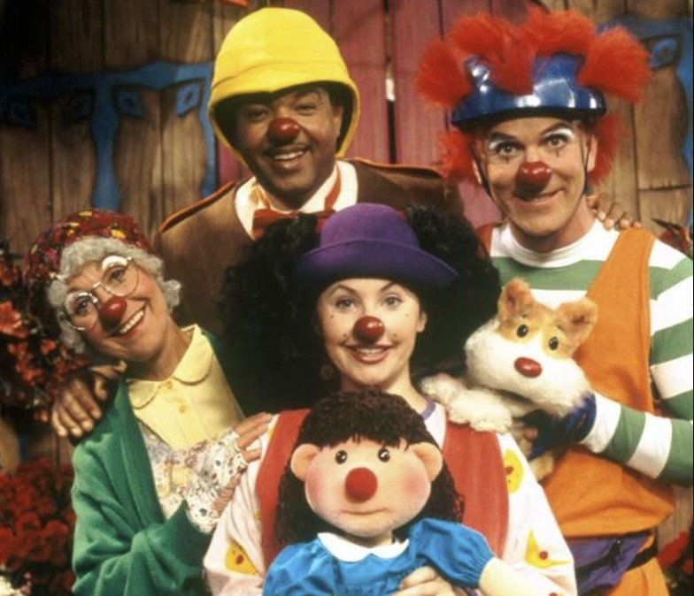

Rahat Koltuk
Rahat Koltuk çizgi filmi 1992-2006 yıllarında yayınlanan toplam 7 sezonluk çocuk programıdır. palyaço kılığında ki Loonette ve yanında ki bebeği Molly ile beraber yaptıkları ,yaşadıkları olayları anlatmaktadır.
Masalları,palyaçoları ve kukla gösterileriyle çocukların ilgisini çeken bu eğlenceli çizgi film, aynı zamanda dostluk, paylaşma ve hayal gücü gibi önemli değerleri de vurgular.
Bu sevilen yapımı sizler de çocuklarınıza izletebilirsiniz.